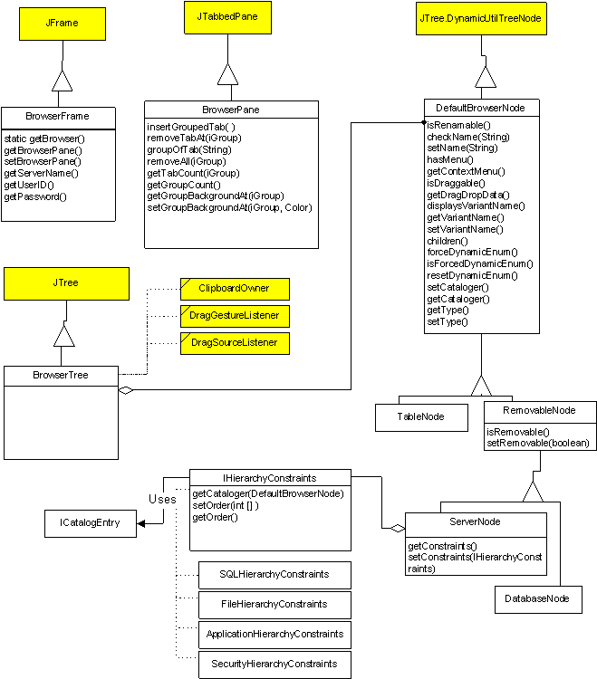
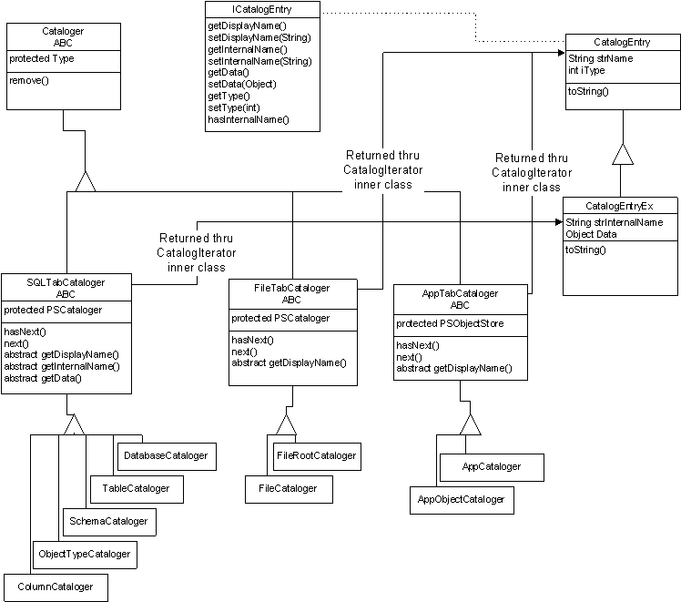

The browser is an independent, singleton window that contains lists of objects from the E2 server and back-end databases. The displayed objects are grouped by tabs; initially the following tabs may be present (the user can optionally toggle the visibility of all tabs except the Applications tab)
Unlike PWB, there will be no cache that can be used 'offline' when the database server is not available. (In the future, this could be added if found necessary.) Therefore, there won't be icons that represent the status of any query (it will always be 'live' or an error will be displayed).
Functionality
The browser has 2 major functions: display a hierarchical list of objects of various types grouped within various tabs and allow the designer to operate on each leaf in a context sensitive way.
The browser is a window containing a static text string (indicating the E2 server) and a collection of tabs. The spec calls for the Application tab to be separate from the other tabs. This will be supported by extending JTabbedPane to support groups of tabs. Each group can be thought of as a separate entity. Each tab will have a tree (derived from JTree) that supports drag and drop and clipboard copying of certain nodes. The tree assumes all nodes it contains are DefaultBrowserNodes. The hierarchy for these classes is shown below.
|  |
|  |
|
Level Type (starting at highest) |
Entry data (displayed, internal) |
Data source |
|
Drivers (Tab) |
Full name, name |
PSCataloger |
|
Servers |
Display name, connect string |
PSUserConfiguration |
|
Database |
Subset name, DB name, filter data |
PSCataloger (default entries), PSUserConfiguration |
|
Schema |
Schema name |
PSCataloger |
|
<object type> |
Display name, Object type |
PSCataloger |
|
<object> |
Object name, schema |
PSCataloger |
The Schema node may or may not be present, depending on the user choice of display format and it may or may not appear in the order shown above (again depending on display format).
Configuration Variables
Several pieces of information associated with the browser must be kept across sessions. This information is stored on the E2 server using the UserConfig object in the E2Designer package. All values are strings. The option names and their uses are shown in the following table:
|
Option Name (key) |
Description of value |
|
SubsetNamesFor<Server> |
Comma separated list of subsets that are displayed for server <Server> in the ODBC tab. The first time a server is expanded, a subset is built for each enumerated entry. On all successive expands, if any new databases are detected, a new subset should be built for that database. |
|
SubsetExcludesFor<Server> |
Comma separated list of ENUMERATED subsets that are NOT displayed for server <Server> in the ODBC tab. If this entry is not found, all subsets are shown. |
|
SubsetDBFor<Subset name> |
Single entry that names the real database that is cataloged for the subset entry named <Subset name>. There should be one of these entries for each element in the SubsetNamesFor<Server> entry. It is valid for this entry to be an empty string for certain servers. |
|
SubsetFilterFor<Subset name> |
A string that is passed to the database to limit the db objects that are returned. There may be one of these entries for each element in the SubsetNamesFor<Server> entry. If this entry is not present for a subset, the default is "%" (all tables are returned). |
|
SubsetFilterObjectTypesFor<Subset name> |
A comma separated list of db object types that the user wants to see. The possible entries are server specific, but will always include an entry for tables. If this entry is not present for a subset, the default is to show all object types except system tables. This whole string can be passed straight to the cataloger. The possible entries are obtained by doing a db object catalog against the server. |
|
ServerNamesFor<Driver> |
A comma separated list of servers that are presented in the tree for the specified driver. |
|
ServerConnectFor<Driver>:<Server> |
This is the connect string that is used to establish a connection with the specified driver and server. Only used in special cases. |
|
ServerUIDFor<Driver>:<Server> |
An encoded string that contains the user ID for server <Server> on driver <Driver>. The UID is optionally saved at the user's request. |
|
ServerPasswordFor<Driver>:<Server> |
An encoded string that contains the password for server <Server> on driver <Driver>. The password is optionally saved at the user's request. |
|
DriversKnown |
Comma separated list of all driver codes that were cataloged. This can be used to check for new drivers being added to the system. |
|
DriversEnabled |
Comma separated list of all drivers that the user wants to see a tab for in the browser. |
|
BrowserWindowPos |
Comma separated list of integers specifying the position and size of the browser. Format: <left>,<top>,<width>,<height> Where <left> and <top> are in screen coords and <width> and <height> are in pixels. |